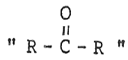
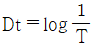
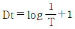
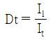
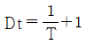
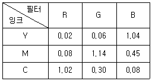
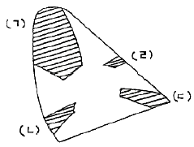

인쇄기사 (2007-08-05 기출문제)
1과목: 인쇄공학
1. 택(tack)과 가장 관계가 없는 것은?
- 웨트 프린팅(wet printing)
- 피킹(picking)
- 점탄성
- 플러싱(flushing)
(정답률: 알수없음)

2. 잉크가 균일하게 인쇄되지 않고 작은 반점 모양으로 얼룩이 무수하게 나타나서 마치 배껍질과 유사한 인쇄면이 되는 현상은?
- 히키(hicky)
- 초킹(chalking)
- 모틀링(mottling)
- 스펙(spek)
(정답률: 알수없음)
3. 주간지 등에서 많이 이용하는 방법으로 속장에 표지를 대고 펼쳐 놓은 다음, 한 가운데를 실이나 철사로 맨 후에 접어 표지와 함께 다듬재단하여 마무리하는 제책 방식은?
- 양장
- 호부장
- 무선철
- 중철
(정답률: 알수없음)
4. 잉크의 성분인 비이클과 안료 사이에 소량의 물이 들어가 친수성인 안료와 혼합되어 광택을 잃어 버리는 사고와 가장 관계가 깊은 것은?
- 파일링
- 프로큐레이션
- 미스팅
- 크리스탈리제이션
(정답률: 알수없음)
5. 인쇄실 실내의 압력이 1atm, 공기의 분압은 0.30atm 일 때 절대습도(H)는 약 얼마인가? (단, 물의 분자량은 18, 공기의 분자량은 29 이다.)
- 18.6%
- 26.6%
- 32.5%
- 43.4%
(정답률: 알수없음)
6. 다음 중 안쇄 잉크의 견고성(견뢰성)에 관한 적성시험 항목으로 가장 거리가 먼 것은?
- 내광성
- 내마찰성
- 내비누성
- 내분산성
(정답률: 알수없음)
7. 다음 중 산화중합 건조형 잉크의 건조속도를 지연시킬 수 있는 방법에 해당되는 것은?
- 2,4,6 – tri(dimethyl amino methyl) phenol 등의 방향족 아민을 첨가한다.
- 건성유의 잉크 피막에 염화유황 가스를 불어 넣는다.
- 1,10 – 페난스로린 등으로 망간 건조제와 함께 착화합물이 형성되도록 한다.
- 알루미나 겔과 같은 안료를 첨가한다.
(정답률: 알수없음)
8. UV(자외선)경화형 평판오프셋 잉크 중 경화건조 속도가 가장 느린 색상은?
- Megenta
- Yellow
- Cyan
- Black
(정답률: 알수없음)
9. 습식평판에서 잉크, 축임물 및 판의 계만정력에 대한 잉크의 젖음계수(S1)를 옳게 나타낸 식은? (단, γ23 : 축임물과 인쇄판의 계면장력, γ12 : 잉크와 축임물의 계면장력, γ13 : 잉크와 인쇄판의 계면장력을 나타낸다.)
- S1 = γ13 - γ23 - γ12
- S1 = γ23 - γ12 - γ13
- S1 = γ13 + γ23 - γ12
- S1 = γ23 + γ12 - γ13
(정답률: 알수없음)
10. 어떤 액체의 표면장력을 측정해 보니 60dyne/cm 이었다. 이 물질의 표면자유에너지는 얼마인가?
- 6 erg/cm2
- 30 erg/cm2
- 60 erg/cm2
- 90 erg/cm2
(정답률: 알수없음)
11. 인쇄판에 대한 애개체의 젖음 현상을 수치로 나타내는 척도가 될 수 없는 것은?
- 접촉각
- 표면장력
- 전이계수
- 젖음계수
(정답률: 알수없음)
12. 책 두께가 두꺼운 사전이나 편람 등에서 검색을 쉽게 하기 위하여 하는 작업은?
- 금붙임
- 마블
- 등띠
- 반달따기
(정답률: 알수없음)
13. 제책을 하는 목적으로 가장 거리가 먼 것은?
- 인쇄된 종이를 흩어지지 않게 하기 위하여
- 잉크의 전이를 좋게 하기 위하여
- 문화를 기록, 보존하기 위하여
- 읽기나 쓰기에 편리하도록 하기 위하여
(정답률: 알수없음)
14. 다색 인쇄에 1차 인쇄한 잉크 위에 다음의 잉크가 잘 오르지 않는 현상은?
- 미스팅
- 모틀링
- 뒤비침
- 크리스탈리제이션
(정답률: 알수없음)
15. 다음 점탄성 모델 중 완전 탄성체의 경우 어느 법칙에 따르는가?
- Hookean solid
- Newtonian fluid
- Maxwell fluid
- Voigt solid
(정답률: 알수없음)
16. 인쇄실 건구 표시 온도가 20℃, 습구 표시 온도가 18℃ 일 때 실내의 불쾌지수는 약 얼마인가?
- 55
- 58
- 65
- 68
(정답률: 알수없음)
17. 물체에 외력을 가하여 탄성한계 이상으로 변형시켰을 때 외력을 제거해도 변형 그대로 가지는 성질은?
- 탄성
- 요변성
- 점성
- 소성
(정답률: 알수없음)
18. 인쇄실 온·습도와 잉크전이율의 관계에 대한 설명으로 옳은 것은?
- 온도가 상승하면 종이에 잉크의 전이율은 증가한다.
- 온도가 상승하면 고정화 잉크량 값이 작아진다.
- 온도가 상승하면 종이에 잉크의 침투가 적어진다.
- 온도가 상승하면 종이에 잉크의 전이율은 감소한다.
(정답률: 알수없음)
19. 광원에 따라서 색이 달라 보이는 현상을 이용하여 변색인쇄를 하는 특수인쇄 방법을 무엇이라 하는가?
- 홀로그램 인쇄
- 폼 인쇄
- 메타메리즘 인쇄
- 비즈니스 인쇄
(정답률: 알수없음)
20. 현재 사용하는 PS판의 노광관리 기준이 일정한 현상조건에서 스텝 6번(농도 : 0.9)으로 결정되었으며 40초 노광을 주었을 때, 사용할 동일 PS판의 스케일 스텝 4번(농도 : 0.6)에서 하얗게 빠졌다면 6번에서 하얗게 되는데 필요한 적정 노광량은 얼마인가? (단, PS 스텝가이드(15단계)의 1단계 농도차는 0.15 이다.)
- 60초
- 80초
- 100초
- 120초
(정답률: 알수없음)
2과목: 인쇄재료학
21. 오프셋 인쇄 기계에 사용되는 블랭킷(blanket)이 갖추어야 할 조건으로 옳지 않은 것은?
- 내유성이 우수해야 한다.
- 수분의 전이성이 좋아야 한다.
- 탄성복원율이 좋아야 한다.
- 내점착성이 좋아야 한다.
(정답률: 알수없음)
22. 비등점이 낮고 증기압이 높기 때문에 건조가 빠른 잉크의 비이클에 사용되는 용제로 다음과 같은 구조식과 관련 있는 용제는? (단, R은 –CH3, -C2H5 이다.)

- 케톤류(ketones)
- 에테르류(athers)
- 에스테르류(esters)
- 알코올류(alcohols)
(정답률: 알수없음)
23. 안료 제조공정에서 침전, 여과한 프레스를 케이크를 건조시키지 않고 그대로 잉크화하는 방식으로 안료 주위에 있는 수분이 바니스에 치환되어 물을 분리하여 잉크를 제조하는 방식은?
- 플러싱(flushing) 방식
- 프리믹싱(pre-mixing) 방식
- 연육(grinding) 방식
- 밀링(milling) 방식
(정답률: 알수없음)
24. 기체 투과성이 적고 내오존성, 내노화성, 전기절연성 등이 우수한 블랭킷용 재료는?
- 니트릴고무
- 아크릴로니트릴고무
- 부타디엔고무
- 부틸고무
(정답률: 알수없음)
25. 서적에 사용되는 백상지는 신문용지에 비해 어떤 성분이 가장 적게 함유되어 있는가?
- 리그닌
- 셀룰로오스
- 헤미셀룰로오스
- 탄닌
(정답률: 알수없음)
26. 알루미늄박의 특성에 대한 설명으로 가장 거리가 먼 것은?
- 공기의 투과도가 우수하다.
- 각종 포장용, 단열용, 장식용으로 사용한다.
- 가스 차단성, 빛 차광성이 우수하다.
- 열전도성, 성형성이 우수하다.
(정답률: 알수없음)
27. 다음 중 도공지에 전분을 바인더로 사용할 때 가장 큰 장점은?
- 내수성이 양호
- 평활성과 접착력 향상
- 스티프니스 향상
- 잉크 수리성 양호
(정답률: 알수없음)
28. 인쇄 잉크의 건조에 대한 설명으로 옳은 것은?
- 습도가 높아질수록 건조가 빨라진다.
- 종이 면이 산성일수록 건조가 늦어진다.
- 코발트(Co)는 특히 표면건조보다 내부건조에 탁월하다.
- 감청안료(prussian Blue)는 건조속도가 매우 느리다.
(정답률: 알수없음)
29. 인쇄 잉크의 전이 현상에 대한 설명 중 틀린 것은?
- 일반적으로 인쇄속도가 빠를수록 전이량은 크다.
- 인쇄압이 클수록 전이량은 크다.
- 용지가 흡유성인 것일수록 전이량은 크다.
- 틱소트로피의 정도에 따라 잉크의 전이량도 달라질 수 있다.
(정답률: 알수없음)
30. 종이의 불투명도가 너무 낮게 되면 인쇄 후 비침 등의 문제가 발생한다. 다음 중 종이의 불투명도를 낮추는데 가장 큰 영항을 미치는 것은?
- 종이의 색상
- 미세 섬유의 함량
- 고해도의 정도
- 형광증백제의 함량
(정답률: 알수없음)
31. 잉크에 첨가되어 성능을 개선하여 주는 컴파운드(compound)의 구성 성분이 아닌 것은?
- 다마르, 브로즌분
- 카르나우바, 칸데릴라
- 파리핀납, 믄탄납
- 바셀린, 밀랍
(정답률: 알수없음)
32. 다음 중 에치액에 대한 설명으로 옳은 것은?
- 비화선부의 감광막 잔류물을 보호한다.
- 비화선부의 불감지화와 보수성을 부여한다.
- 아라비아 고무를 금속표면에 흡착시켜 감지화한다.
- pH의 급변화를 조장한다.
(정답률: 알수없음)
33. 다음 중 백색 안료의 성분이 아닌 것은?
- 산화티탄(TiO2)
- 침강성 황산바륨(BaSO4)
- 산화아연(ZnO)
- 황화카드뮴(CdS)
(정답률: 알수없음)
34. 다음 중 뒷묻음 방지용 컴파운드에 가장 많이 사용되는 물질은?
- 왁스
- 아마인유
- BHT
- 로진
(정답률: 알수없음)
35. 종이의 불투명도 또는 백색도를 높이거나 인쇄적정 및 필기적성을 좋게 하기 위한 공정은?
- 충전
- 고해
- 초지
- 가공
(정답률: 알수없음)
36. 다음 중 종이의 표면강도를 측정할 때 사용하는 방법으로 옳은 것은?
- 겔(gel)화제 첨가법
- 데니슨 왁스(Denison wax)법
- 거얼리 테스터
- MIT 테스터
(정답률: 알수없음)
37. 종이의 인쇄적성을 향상시키기 위하여 행해지는 도공용(coating)으로 사용되는 바인더(binder)가 아닌 것은?
- 라텍스(latex)
- 로진(rosin)
- 아교(animal glue)
- 카제인(casein)
(정답률: 알수없음)
38. 물속에서 섬유를 기계적으로 처리하여 초지하기에 적당하도록 만들어 주는 공정은?
- 사이징
- 충전
- 고해
- 정선
(정답률: 알수없음)
39. 종이의 물성을 측정할 때 다음 중 섬유의 방향성(MD/CD)과 가장 관계가 먼 것은?
- 인장강도(tensile strength)
- 신장율(stretch)
- 내절도(folding endurance)
- 평활도(smoothness)
(정답률: 알수없음)
40. 평판 오프셋인쇄에 사용되는 유기안료의 설명으로 틀린 것은?
- 무기안료에 비해 비중이 적다.
- 무기안료에 비해 착색력이 강하다.
- 무기안료에 비해 은폐력이 좋다.
- 무기안료에 비해 색이 선명하다.
(정답률: 알수없음)
3과목: 특수인쇄학
41. 사진제판법을 응용하여 주로 정밀한 전기, 전자 부품을 제조하는 기술로서 비교적 넓은 면적에 동시에 같은 모양의 제품을 정확하고 다량으로 가공할 수 있는 방법은?
- 포토패브리케이션
- 인코드마스크
- 마이크로리소그래피
- 포토마스크
(정답률: 알수없음)
42. 비접촉 인쇄(non-impact printing)가 아닌 것은?
- ink jet printing
- laser printing
- stereoscopic printing
- bubble jet printing
(정답률: 알수없음)
43. 플렉소 인쇄에서 에스테르류의 용제에 가장 강한 내성을 갖는 판재는?
- 천연고무(NR)
- 합성고무(NBR)
- 부틸고무(HR)
- 감광성수지판
(정답률: 알수없음)
44. 일반적으로 유리 인쇄(glass printing) 후 안료를 표면에 고착시키기 위한 가장 적절한 방법은?
- 가열
- 가압
- 자외선 빛찜
- 침투
(정답률: 알수없음)
45. 그라비어 인쇄에 있어서 반점 형태로 망점 빠짐(speckle) 현상이 발생하는 이유로 가장 거리가 먼 것은?
- 인쇄압이 너무 낮을 경우
- 잉크 점도가 너무 낮을 경우
- 잉크 건조가 너무 빠를 경우
- 판면 오목점의 막힘에 의한 경우
(정답률: 알수없음)
46. 다음 특수인쇄 방식 중 정전기 발생을 이용한 작업 공정이 가장 필요한 것은?
- 발색 인쇄
- 감열 인쇄
- 바크도 인쇄
- 식모 인쇄
(정답률: 알수없음)
47. 비즈니스폼 인쇄기의 급지부에서 종이가 인쇄부에 공급되기 전에 좌우로 흔들리는 것을 조정하는 역할을 하는 것은?
- dancer roll
- full auto paster
- edge guide
- perforating unit
(정답률: 알수없음)
48. UV 잉크의 경화에 영항을 주는 요인에 대한 설명 중 틀린 것은?
- 피막의 두께가 두꺼우면 경화 속도는 느리다.
- 잉크의 농도가 높으면 경화 속도는 느리다.
- 잉크의 은폐력이 낮으면 경화 속도는 느리다.
- 소재의 색상이 진하면 경화 속도는 느리다.
(정답률: 알수없음)
49. 플렉소 그래픽 제판에서 망점 촬영할 때 무아레(moire)가 발생할 가능성이 가장 높은 스크린 각도는?
- 노랑 95°
- 빨강 15°
- 파랑 60°
- 검정 45°
(정답률: 알수없음)
50. 집적회로(IC), 대규모 집적회로(LSI) 등의 반도체 집적회로 제조에 가장 많이 사용되는 방법은?
- 마이크로 리소그래피(micro lithograpy)법
- 포토 일렉트로포밍(photo electroforming)법
- 포토 애칭(photoething)법
- 서브트렉티브(subtractive)법
(정답률: 알수없음)
51. 일반적인 그라비어 잉크에 대한 설명으로 가장 옳은 것은?
- 점도가 높고 끈기가 없어야 한다.
- 점도가 높고 끈기가 있어야 한다.
- 점도가 낮고 끈기가 없어야 한다.
- 점도가 낮고 끈기가 있어야 한다.
(정답률: 알수없음)
52. 일반 스크린 인쇄에 사용되는 스퀴지 고무의 경도(SH)는 어느 정도인가?
- 20 ~ 50°
- 60 ~ 90°
- 100 ~ 130°
- 140 ~ 170°
(정답률: 알수없음)
53. 그라비어 인쇄법에서 카본티슈에 감광성을 주기 위해 가장 많이 사용되는 감광 재료는?
- 중크롬산암모늄
- 중클모산칼륨
- 중클모산바륨
- 디아조화합물
(정답률: 알수없음)
54. 다음 금속인쇄 잉크의 원료 중 비이클의 성분에 해당되는 것은?
- 실리카
- 카민 6B
- 레오졸
- 지방산 변성알키드수지
(정답률: 알수없음)
55. 기존의 잉크와는 달리 전자잉크를 사용하며 전자 액체 잉크가 전이 단계에서 반고체 덩어리로 전환되고 다시 제거 단계에서 액체로 전환되므로서 100% 전이가 가능한 인쇄 방식은?
- embossing printing
- digital printing
- liquid crystal printing
- stereoscopic printing
(정답률: 알수없음)
56. 열에 감응하여 색이 변화되는 액정으로서, 열 분포를 컬러의 가시상으로 표시하는 마이크로파의 패턴이나 비파괴검사 등에 활용되는 액정은?
- 콜레스테릭 액정
- 스메틱 액정
- 네마틱 액정
- 디스코틱 액정
(정답률: 알수없음)
57. 정전인쇄 방식 중 화상 형성을 위해서 사용하는 재료는?
- 파우더(powder)
- 안료(pigment)
- 토너(toner)
- 잉크(ink)
(정답률: 알수없음)
58. 잉크의 침투건조 속도에 대한 설명으로 틀린 것은?
- 코팅층과 비이클 성분의 친화력이 약할수록 침투건조가 빠르다.
- 비이클의 점도가 낮으면 침투속도가 빠르다.
- 수지의 용해 상황이 양호할수록 침투속도는 빠르다.
- 피인쇄체의 투기도가 클수록 침투속도는 빠르다.
(정답률: 알수없음)
59. 플렉소 인쇄에서 아닐록스 롤러의 홈(cell) 각도는 몇 도로 조각되어 있는가?
- 30°
- 45°
- 60°
- 90°
(정답률: 알수없음)
60. 그라비어 판통의 구성 형식이 아닌 것은?
- 원통에 제판된 평판을 감아 붙인 형식
- 축이 판통에 붙은 형식
- 축을 중심으로 판통과 압통, 고무통이 연결되어 있는 형식
- 축과 실린더가 별도로 되어 있어 인쇄작업 공정에서 끼워 넣는 형식
(정답률: 알수없음)
4과목: 인쇄색채학
61. 농도에는 투과농도와 반사농도가 있는데 투과농도를 계산하는 식으로 옳은 것은? (단, 투과농도 : Dt, 투과율 : T, 입사광 : Il, 투과광 : It 이다.)




(정답률: 알수없음)
62. 시간적인 차이를 두어 2가지 색을 차례로 볼 때 생기는 색대비 현상은?
- 동시대비
- 계시대비
- 동화대비
- 연변대비
(정답률: 알수없음)
63. 인쇄잉크의 3원색인 Y, M, C 잉크로 인쇄된 부분을 R, G, B 필터를 사용하여 농도를 측정했을 때 다음 표와 같이 나타났다. Y, M, C 잉크의 색효율(%)을 옳게 나타낸 것은?

- Y : 77, M : 81, C : 96
- Y : 96, M : 77, C : 81
- Y : 81, M : 96, C : 77
- Y : 96, M : 91, C : 81
(정답률: 알수없음)
64. 왼쪽 검정색 원의 중심을 응시하다가 우측 검은 점을 보면 주로 나타나는 현상은?
- 보색 현상
- 잔상 현상
- 채도대비
- 푸르킨예 현상
(정답률: 알수없음)
65. 물체 표면의 반사율이 다른 것에 비하여 큰지 작은지를 판정하는 시지각의 속성을 척도화한 것을 무엇이라고 하는가?
- 색상
- 명도
- 채도
- 색입체
(정답률: 알수없음)
66. 메타메리즘(metamerism)에 대한 설명으로 가장 관계가 깊은 것은?
- 물체색의 등색은 분광반사율이나 분광투과율이 동일하지 않아도 된다.
- 물체색의 등색은 물체색 자체의 분광반사율 또는 분광투과율과 함께 조명광의 분광조성에 따라 결정된다.
- 물체색으로부터 우리의 눈에 입사하는 색자극이 서로 같지 않기 때문에 일어나는 현상이다.
- 물체색에 포함되어 있는 서로 다른 안료의 특성이 시각에 의해 동일시 되는 것읻.
(정답률: 알수없음)
67. 광원 3원색에 색재현 관계식으로 옳은 것은? (단, R : Red, B : Blue, G : Green, W : White, Bk : Black 이다.)
- R + Bk + W = G
- R + G + B = W
- G + B + W = R
- G + W + R = Bk
(정답률: 알수없음)
68. 오스트발트 표색계에서 가령 17lc로 표현된 색은 약간 회새개 기미의 청록색이다. 백색량 8.9%, 흑색량 44% 일 때 순색량은 얼마인가?
- 42.9%
- 47.1%
- 56.0%
- 91.1%
(정답률: 알수없음)
69. 두 색이 이웃해 있을 때 경계부분에서의 대비현상이 다른 곳보다 더 강하게 일어나는 현상은?
- 명도 대비
- 보색 대비
- 연변 대비
- 채도 대비
(정답률: 알수없음)
70. 주위의 밝기 변화에 따라 물체에 대한 색의 명도가 변화되어 보이는 현상은?
- 아크로매틱(achromatic) 현상
- 푸리킨예(purkinie) 현상
- 코마틱(comatic) 현상
- 헤일로(halo) 현상
(정답률: 알수없음)
71. 옛날부터 전해 내려오는 습관상 사용하는 색상 하나 하나의 고유 색명을 의미하는 것은?
- 관용색명
- 일반색명
- 계통색명
- 특별색명
(정답률: 알수없음)
72. 디스크리닝(descreening)에 대하여 가장 옳게 설명한 것은?
- 디테일에서의 손실을 야기하는 이미지의 해상도 감소현상을 말한다.
- 하프톤 점 패턴들을 초점을 흐리게 하는 방법으로 스캔중이나 스캔 뒤 인쇄과정에서 제거하는 것을 말한다.
- 스캐닝에서 전기적 간섭이나 도구의 불안정에 의하여 부정확하게 읽혀진 픽셀 값의 혼란을 말한다.
- 스캐닝 해상도를 계산하기 위하여 출력 스캐닝 조절에 적용하는 품질 값을 말한다.
(정답률: 알수없음)
73. 먼셀표색계에서 5가지 기본색이 아닌 것은?
- 노랑(Y)
- 파랑(B)
- 보라(P)
- 주황(YR)
(정답률: 알수없음)
74. 먼셀 표색체계에서 지각색은 색상, 명도, 채도에 따라 표색한다. 색상이 5Y, 채도가 8, 명도가 7 인 경우 가장 옳게 표기한 것은?
- 5Y 8/7
- 7/8/5/Y
- 5Y 7/8
- 5Y/7.8
(정답률: 알수없음)
75. 컬러 제판작업시 적색필터를 걸어서 촬영하면 적색광은 통과하고 녹색, 청색광은 흡수하게 되어 제판 필름 위에는 적색광만 노광된다. 이 때 인쇄판으로는 적색필터를 겉면 어떤 색의 판이 되는가?
- Yellow
- Magenta
- Cyan
- Black
(정답률: 알수없음)
76. 빛과 색에 대한 이론과 그 학설이 잘못 연결된 것은?
- 헤링(Hering) - 반대색설(反對色說)
- 뉴톤(Newton) - 광입자설(光粒子說)
- 헬름홀츠(Helmholtz) - 삼원색설(三原色設)
- 브류스터(Brewster) - 단계설(段階說)
(정답률: 알수없음)
77. Maxwell의 색도도에서 등색에 필요한 R, G, B의 양, 즉 3자극치를 X, Y, Z 라 하고 이들의 상대값을 x, y, z라고 했을 때, 3자극치가 X = 60, Y = 80, Z = 60 이었다면 원색 빨강의 상대값 x는 얼마인가?
- 0.2
- 0.3
- 0.4
- 0.5
(정답률: 알수없음)
78. CIE 색도도에 녹색, 파랑, 빨강, 노랑의 색도범위를 개략적으로 나타낸 것이다. 녹색에 해당하는 것은?

- (ㄱ)
- (ㄴ)
- (ㄷ)
- (ㄹ)
(정답률: 알수없음)
79. 비누방울이나 기름막이 쳐진 물의 표면, 그리고 얇은 막으로 덮힌 물체에서 관찰되는 무지개 현상을 일으키는 색을 무엇이라고 하는가?
- 공간색
- 금속색
- 형광색
- 간섭색
(정답률: 알수없음)
80. 다음 색채 배색 중 새개의 명시도가 가장 높은 것에 해당되는 것은?
- 빨강 바탕에 파랑
- 파랑 바탕에 초록
- 검정 바탕에 노랑
- 하양 바탕에 주황
(정답률: 알수없음)
5과목: 인쇄작업론 및 품질관리
81. 그라비어 윤전인쇄기의 장점이라고 볼 수 없는 것은?
- 농담 재현성이 뛰어나다.
- 구리판 위에 크롬을 도금하여 내쇄력이 강하다.
- 제판비가 비교적 싸고 작업공정이 간단하여 경제적이고 고능률적이다.
- 고속인쇄, 다색인쇄, 양면인쇄가 가능하다.
(정답률: 알수없음)
82. 오프셋 인쇄에서 축임물의 역할이라고 볼 수 없는 것은?
- 비화선부 주변을 깨끗이 한다.
- 잉크가 유화되도록 도와준다.
- 판면의 온도와 농도를 일정하게 한다.
- 화선부의 퍼짐, 가늘어짐, 벗겨짐 등의 변화를 방지한다.
(정답률: 알수없음)
83. 다음 중 GATF 스타타킷(star target)으로 관리할 수 없는 인쇄불량 현상은?
- 망점확대(dot gain)
- 슬러(slur)
- 고스트(ghost)
- 더블(double)
(정답률: 알수없음)
84. 그라비어 제판에서 화상의 농담을 재현하는 방법에 속하지 않는 것은?
- FM(frequency modulation) 그라비어 방식
- 망점(halftone) 그라비어 방식
- 하드-도트(hard-dot) 그라비어 방식
- 종래형(conventional) 그라비어 방식
(정답률: 알수없음)
85. 오프셋 윤전인쇄기의 급지장치에 해당되지 않는 것은?
- 댄서 롤러(dancer roller)
- 사이드 레이(side lay)
- 미터링 롤러(metering roller)
- 슬리터(slitter)
(정답률: 알수없음)
86. 오프셋 매엽 인쇄기의 구조를 급지부, 인쇄부, 배지부로 나눌 때 인쇄부의 구성 장치가 아닌 것은?
- 블랭킷통
- 판통갭
- 스윙그리퍼
- 압통그리퍼
(정답률: 알수없음)
87. 품질관리 활동을 전개하는데 있어서 기본적인 Q.C 수법으로 알려진 7가지 도구 중 불량, 결점, 고장 등에 대하여 어떤 항목에 문제가 있는지, 그 영향은 어느 정도인지를 알아내는데 사용되는 방법은?
- 히스토그램(histogram)
- 산점도(scatter diagram)
- 파레토그램(pateto diagram)
- 특성요인도(characteristic diagram)
(정답률: 알수없음)
88. 급지장치의 종류 중 앞종이와 뒷종이의 거리가 조금 떨어져서 중첩시켜 용지를 보내는 피더(feeder) 형식은?
- 프렉션 피더
- 덱스터 피더
- 유니버셜 피더
- 스트림 피더
(정답률: 알수없음)
89. 압통의 운동에 따라 행하는 인쇄의 3형식 중 원압 인쇄기(cylinder press)의 종류가 아닌 것은?
- 1회전 인쇄기(one-revolution press)
- 2회전 인쇄기(two-revolution press)
- 윤전 인쇄기(rotary press)
- 정지 원통 인쇄기(stop-cylinder press)
(정답률: 알수없음)
90. 전사인쇄 방식 중 가열에 의해 고체에서 직접 기체로 전사되는 방식은?
- 물 전사법
- 융제 전사법
- 습식 전사법
- 열승화 전사법
(정답률: 알수없음)
91. 오프셋 윤전기에서 댄서 롤러(dancer roller)의 주된 역할은?
- 급지시 앞 가늠맞춤
- 급지시 속도 조절
- 급지시 장력 조절
- 급지시 옆 가늠맞춤
(정답률: 알수없음)
92. 배지장치에서 종이가 흐트러지는 것을 방지하기 위해 회전하면서 종이를 흡수하여 일정한 위치에 떨어지게 하는 것은?
- 체인 집게
- 진공 바퀴
- 멈추개
- 가이드
(정답률: 알수없음)
93. 그라비어 백업(back up) 롤러의 주된 역할에 대하여 옳게 나타낸 것은?
- 판통의 상하, 좌우 흔들림을 방지하는 역할
- 인쇄기의 조작을 원활하게 하는 역할
- 압통에 압력을 보강하여 주는 역할
- 두루마리 용지에 좌우 불균형을 조절하는 역할
(정답률: 알수없음)
94. 평판 오프셋 인쇄기에서 한 개의 블랭킷 실린더가 인접한 다른 한 개의 블랭킷 실린더의 압통을 대신하여 양면인쇄기를 통칭하여 무엇이라고 하는가?
- 2통형
- B-B형
- 유닛(Unit)형
- 공통압통형
(정답률: 알수없음)
95. 오프셋 매엽 인쇄기에서 수동 핸들을 사용하거나 기계를 공회전시키면서 판의 화선 부분에 따라 롤러 위에 나오는 잉크량을 눈으로 판단하면서 조정나사로 롤러 전체에 대한 잉크량을 조절하는 것은?
- 이김 롤러
- 잉크 집
- 묻힘 롤러
- 진동 롤러
(정답률: 알수없음)
96. 오프셋인쇄에 사용하는 품질관리용 PMS 스케일에 대한 설명으로 틀린 것은?
- 인쇄판의 빛쬠 정도와 망점 재현성을 평가 관리한다.
- 인쇄물의 슬러를 평가 관리한다.
- 인쇄물의 더블을 평가 관리한다.
- 일반인쇄에서 축임물의 양을 관리한다.
(정답률: 알수없음)
97. 평면, 곡면, 오목, 볼록면이 있는 작은 면적의 표면에 인쇄하는 방법으로 탄성체의 전사용 탐폰(tampon)에 옮긴 후 피인쇄체에 전사하는 인쇄 방법은?
- 발포(發泡) 인쇄
- 돋움(die stamping) 인쇄
- 앰풀(ampoule) 인쇄
- 패드(pad) 인쇄
(정답률: 알수없음)
98. 4·6배판 144페이지 책자를 4·6 전지에 따로걸이 인쇄를 할 경우 층 인쇄대수는?
- 9대
- 18대
- 36대
- 72대
(정답률: 알수없음)
99. 플렉소그래피 인쇄기로 한 개의 커다란 압통 주위에 4~8개의 인쇄유닛을 배치한 유형은?
- 인라인형(in-line type)
- CI형(common impression type)
- 스택형(stack type)
- 피라미드형(pyramid type)
(정답률: 알수없음)
100. 오프셋윤전기의 접지장치로 주행지를 끌어당겨 둘로 접는 역할을 하는 경사진 삼각판은?
- 포머(former)
- 니핑 롤러(ipping roller)
- 절단통(cutting cylinder)
- 나이프 홀더(knife holder)
(정답률: 알수없음)